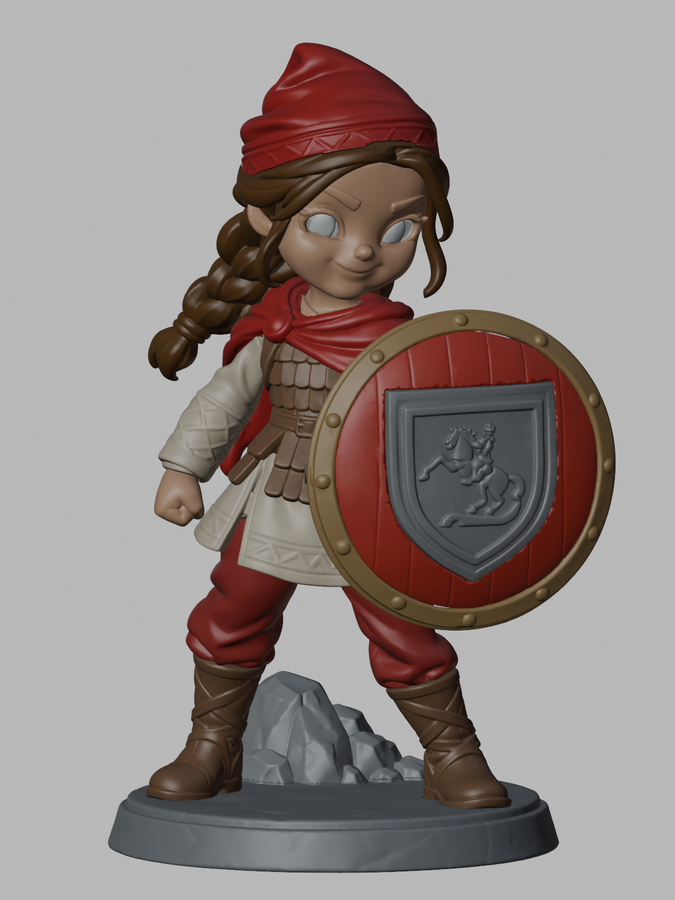
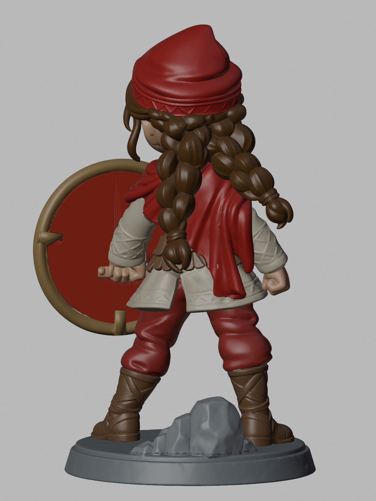
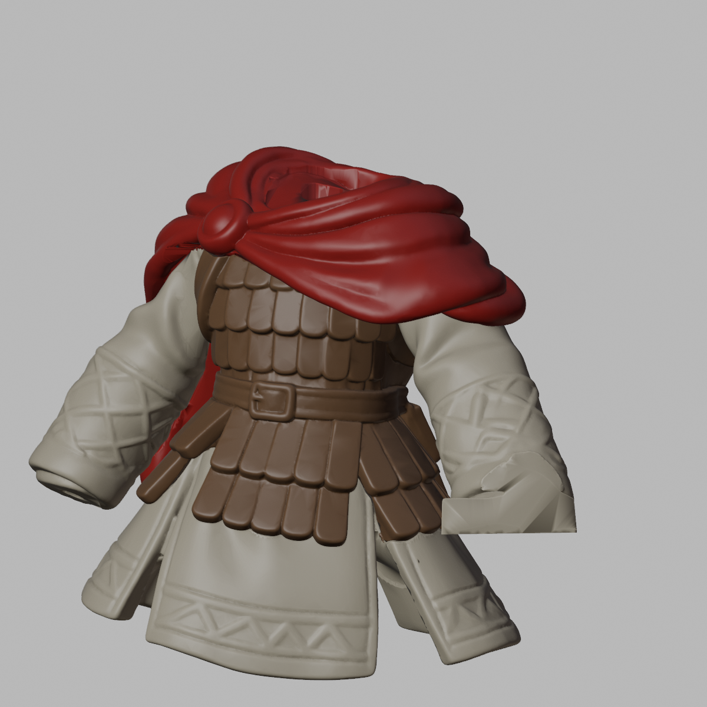

01
Kaide ve kaya
01_Kaide üzerine 02_Kaya parçasını üstten indirerek oturt. İlk provada yapıştırıcı kullanma.
Alternatif kafa: ZIP içindeki Alternatif_Kafa/ dosyası, 15_Kafa + 16_Sol_Goz + 17_Sag_Goz yerine geçer. Bu seçenekle 18 parçalı montaj yapılır; diğer adımlar aynıdır.
Kaide dahil 160 mm · 20 ayrı parça
Boyanabilen parçalar ve yapıştırıcıyla sabitlenebilir bağlantılar için montaj rehberi.
20_Sag_El, kalkanı tutan ayrı el parçasıdır.

Her satır bir STL dosyasına ve Blender’daki aynı adlı nesneye karşılık gelir.
| Dosya / nesne | Parça |
|---|---|
01_Kaide.stl | Kaide |
02_Kaya.stl | Kaide üstündeki kaya |
03_Sol_Bot.stl | Önden bakışta sol bot |
04_Sag_Bot.stl | Önden bakışta sağ bot |
05_Bacaklar.stl | Bacaklar |
06_Elbise.stl | Elbise / gövde |
07_Zirh.stl | Ayrı zırh |
08_Pelerin.stl | Şal ve pelerin |
09_Sol_Kol.stl | Önden bakışta sol kol |
10_Sol_El.stl | Önden bakışta sol el |
11_Sag_Kol.stl | Kalkan tarafındaki kol |
12_Kalkan.stl | Kalkan gövdesi |
13_Kalkan_Cemberi.stl | Kalkanın dış metal çemberi |
14_Arma.stl | Kalkan arması; atlı kabartma dahil |
15_Kafa.stl | Tek parça kafa; kaşlar ve kirpikler üzerinde |
16_Sol_Goz.stl | Önden bakışta sol göz |
17_Sag_Goz.stl | Önden bakışta sağ göz |
18_Sac.stl | Saç |
19_Bere.stl | Bere |
20_Sag_El.stl | Kalkanı tutan el |
Önce kuru prova yap; yapıştırma ve boya işlemlerini doğruladığın sıraya göre tamamla. “Üstten indir” ifadesi modelin dik durduğu konuma göredir.
01_Kaide üzerine 02_Kaya parçasını üstten indirerek oturt. İlk provada yapıştırıcı kullanma.
03_Sol_Bot ve 04_Sag_Bot parçalarını kaideye yerleştir. 05_Bacaklar parçasını iki bota aynı anda hizalayarak üstten indir.
Önce 06_Elbise parçasını bacakların üzerine üstten indir. Ardından 07_Zirh parçasını elbisenin üzerine yine üstten oturt. Zırh, elbiseden ayrı boyanıp sonradan takılan parçadır.
08_Pelerin parçasını zırhın üstüne üstten indir; pimleri ve oturma yüzeylerini birlikte hizala.
Önce 10_Sol_El parçasını masada, 09_Sol_Kol parçasının bileğindeki eğimli pim doğrultusunda tak. Ardından birleşmiş kol–el grubunu önden bakışta sol taraftan yatay olarak içeri kaydırıp pelerindeki omuz yuvasına oturt. Böylece el montaj sırasında elbisenin kenarına sürtmez.
11_Sag_Kol parçasını sağ-alt taraftan içeri ve yukarı eğimli biçimde omuz yuvasına oturt. Ardından 20_Sag_El parçasını bilek pimiyle hizalayıp alttan yukarı tak. Kalkan grubunu henüz takma.
15_Kafa parçasını boyun pimiyle pelerine üstten indir. 16_Sol_Goz ve 17_Sag_Goz parçalarını yüzün önünden göz yuvalarına doğru tak. Gözleri ayrı boya; kaşlar ve kirpikler kafa üzerinde kalır.
18_Sac parçasını kafanın üzerine üstten indir; iki yönlü pim yuvasını hizala. Sonra 19_Bere parçasını saçın tepesindeki pim ve oturma yüzeyi üzerine üstten yerleştir.
13_Kalkan_Cemberi parçasını sabit tut. 12_Kalkan gövdesini arma tarafındaki ön açıklıktan çembere yerleştir. Sonra 14_Arma parçasını kalkanın ön yüzündeki yerine tak. Üç parçayı boyama tamamlandıktan sonra birleştir.
Birleşmiş kalkan grubunu kalkan yüzüne dik doğrultuda önden ele yaklaştırıp oturt. Pimi yuvaya hizala; çemberden bastırarak kolu esnetme. Tüm kuru prova tamamlandıktan sonra uygun reçine yapıştırıcısıyla sırayla sabitle.

Önizlemedeki renkler parçaları ayırt etmek ve boya planlamak içindir. STL renk taşımaz. Bere, kollar ve kıyafetteki mevcut desen kabartıları korunmuştur; her desen için ayrı STL yoktur. Bu sürümde bu yüzeyler decal için düzleştirilmiş değildir. Waterslide decal uygulanacaksa mevcut kabartının uygunluğunu prototipte değerlendir.
Blender dosyasında parçalar yukarıdaki numaralı adlarla ayrı nesnelerdir. Outliner listesinden adını seçerek doğru parçayı bulabilir; diğer nesneleri görünmez yapıp pimleri ve yuvaları inceleyebilirsin. Ana dosyada ortak montaj konumlarını koru. Baskı yerleşimini bir kopyada veya dilimleyicide yap. Tek bir parçayı bağımsız ölçeklemek eşleşen yuvaları bozar; geometri değiştirirsen ilgili STL’yi yeniden dışa aktar ve o geçmeyi yeniden prova et.
20 STL dosyasının tamamı yeniden içe aktarılarak doğrulandı: her biri tek kapalı bileşen, tutarlı yüzey yönleri ve sıfır alanlı üçgen yok. Kaide dahil toplam yükseklik 160.000 mm. 190 parça çifti ve montaj sırasında 73 hareketli/sabit parça çifti, toplam 10893 konumda kontrol edildi. Hareketler 0,5 mm aralıkla örneklendi; hesaplanan en büyük ortak hacim 0.00015994 mm³ olup sayısal eşik olan 0,001 mm³ altında. Hareket boşlukları ayrıca sürekli süpürme hacimleriyle açıldı. Bu sonuç belirtilen montaj sırasına ve bu dosyaların geometrisine aittir; gerçek baskı ve minimum duvar kalınlığı doğrulamasının yerini tutmaz.
Sayısal yüzey ve montaj kontrolleri, gerçek reçine baskısının sonuç garantisi değildir. Bu kılavuz tüm yüzeylerde doğrulanmış bir asgari duvar kalınlığı iddiası içermez. Destekler, baskı yönü ve süreç kaynaklı ölçü telafisi yazıcı/reçine profiline göre hazırlanmalıdır.